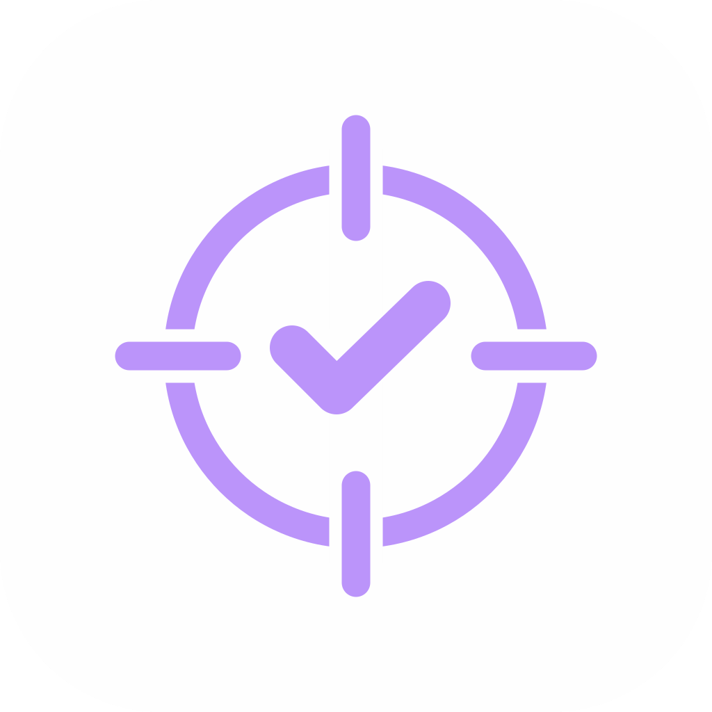

Política de privacidad
En vigor desde el 13 de octubre de 2026.
Lo que apuntas en la app
Todo lo que escribes en MikaLog (días, hábitos, sueño, partidas, notas) se guarda solo en la carpeta de datos de tu ordenador. MikaLog no tiene cuentas ni servidor propio, no recoge estadísticas de uso y no envía esos datos a nadie.
Si activas la sincronización de partidas (opcional)
-
MikaLog puede traer tus partidas con HenrikDev
(
api.henrikdev.xyz), un servicio de terceros no oficial, ajeno a Riot Games y a MikaLog. Para usarlo sacas tú una clave de HenrikDev y la pones en la app junto a tu Riot ID y tu región. - Solo cuando pulsas «Sincronizar» o «Probar conexión», la app envía a HenrikDev tu Riot ID, tu región y tu clave. HenrikDev devuelve a tu ordenador el mapa, el agente, el resultado, las kills, las muertes, la puntuación y las rondas de tus partidas. Nunca se conecta por su cuenta ni en segundo plano.
- La clave se guarda en el almacén de credenciales de Windows, no en la carpeta de datos, y no va en tus copias ni en las exportaciones. El Riot ID y la región se guardan con el resto de tus ajustes, en tu ordenador.
- Las peticiones van directas de tu ordenador a HenrikDev: no pasan por ningún servidor de MikaLog, porque no lo hay. Lo que HenrikDev registre de esas peticiones, como la dirección IP, depende de sus propias condiciones.
- Tus estadísticas no se muestran a otros jugadores y MikaLog no lee datos de nadie más.
Dejar de sincronizar
En Ajustes > «Sincronizar partidas», borra la clave: se elimina del almacén de credenciales de Windows y la app deja de conectarse. Las partidas ya sincronizadas siguen en tu carpeta de datos y puedes borrarlas desde la app. La clave es tuya: puedes anularla o pedir otra en HenrikDev cuando quieras.
Lo que no hace
MikaLog no vende datos, no muestra anuncios, no cobra y no lee datos de otros jugadores.
Contacto
Miguel Ángel Díaz Gutiérrez (MikaEl) · miguelangeldiaztic@gmail.com · incidencias en GitHub
English
Effective 13 October 2026.
Your logs. Everything you enter in MikaLog stays in the data folder on your computer. MikaLog has no accounts and no server of its own, collects no usage analytics and sends that data nowhere.
Optional match sync. MikaLog can fetch your matches through HenrikDev (api.henrikdev.xyz), an unofficial third-party service that is not affiliated with Riot Games or MikaLog. You get your own HenrikDev API key and enter it in the app with your Riot ID and region. Only when you press "Sync" or "Test connection" does the app send your Riot ID, region and key to HenrikDev, which returns map, agent, result, kills, deaths, score and rounds for your matches. The app never connects on its own or in the background. The key is kept in the Windows Credential Manager, never in the data folder, backups or exports. Requests go straight from your computer to HenrikDev; there is no MikaLog server. Whatever HenrikDev logs about those requests, such as IP addresses, is governed by its own terms. Your stats are not shown to other players.
Stopping sync. Delete the key in Settings > "Sync matches": it is removed from the Windows Credential Manager and the app stops connecting. Matches already synced stay in your data folder and can be deleted from the app.
What it doesn't do. No selling of data, no ads, no payments, no other players' data.
Contact. miguelangeldiaztic@gmail.com or GitHub issues.